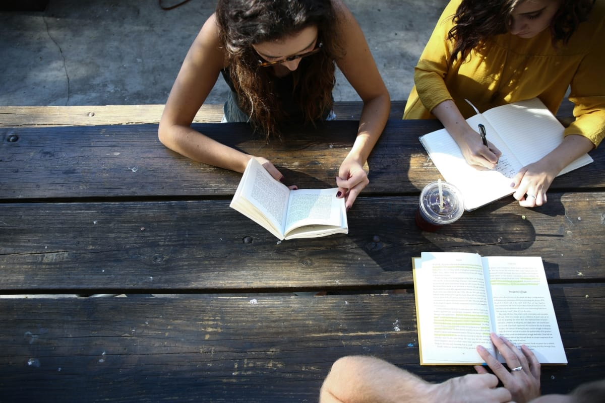

When I’m not immersed in my creative projects, I love to explore the world and engage in activities that fuel my imagination and rejuvenate my spirit. Traveling is one of my greatest passions; it allows me to experience diverse cultures, meet fascinating people, and discover new perspectives. Whether wandering through the vibrant streets of a bustling city or finding tranquility in the serene landscapes of nature, I find inspiration in every corner of the globe. Each journey not only enriches my soul but also informs my work, adding depth and breadth to my artistic endeavors.
Through my work
In my free time, I often find solace in the simple pleasures of life. Reading is a cherished pastime, and I have a particular fondness for literature that challenges my thinking and broadens my understanding of the world. Books are windows to different realms, and they often spark new ideas and concepts that I later explore in my art and design work. I also enjoy spending time in nature, where the beauty and serenity of the environment provide a perfect backdrop for reflection and creative thought. Hiking, camping, and simply walking through a forest or along a beach help me reconnect with the natural world and find balance.
“Design is not just what it looks like and feels like. Design is how it works.”
Photography is another passion of mine, allowing me to capture fleeting moments and tell stories through images. I often take my camera on my travels, documenting the unique beauty of each place I visit. This visual diary not only serves as a personal keepsake but also as a wellspring of inspiration for future projects. The play of light and shadow, the textures and patterns of different environments, and the candid expressions of people I encounter all find their way into my work in various forms.
Additionally, I enjoy experimenting with different forms of artistic expression, from painting and drawing to digital design and mixed media. This constant exploration keeps my creativity alive and ensures that my work remains fresh and dynamic. I believe that art is a never-ending journey of discovery, and I am always eager to learn new techniques and push the boundaries of my creativity.
Spending time with family and friends is also incredibly important to me. Their support and encouragement fuel my passion and drive, and our shared experiences often inspire new ideas and projects. Whether it’s a casual gathering, a collaborative project, or a heartfelt conversation, these moments remind me of the importance of connection and community.
 Photo by Alexis Brown on Unsplash
In essence, my hobbies and free-time activities are an extension of my creative life. They provide me with endless inspiration, joy, and the energy to continue pursuing my passions as an Artist, Designer, and Thinker. Every experience, every journey, and every moment of reflection contributes to the tapestry of my life and work, shaping me into the person and creator I am today.